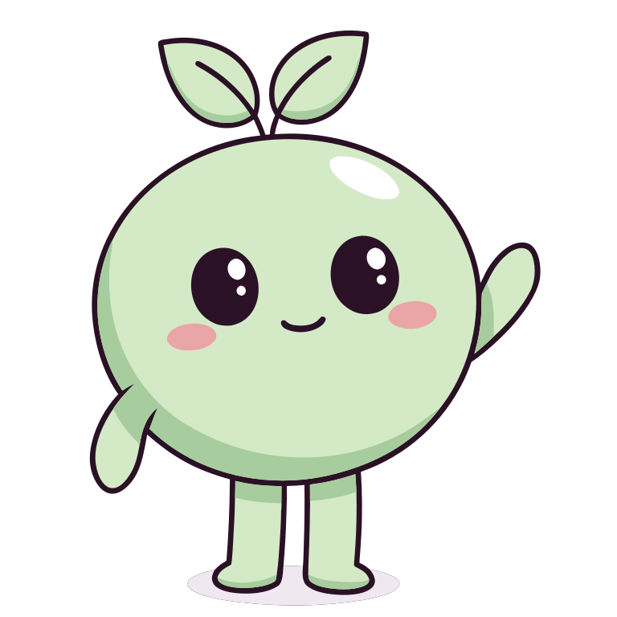
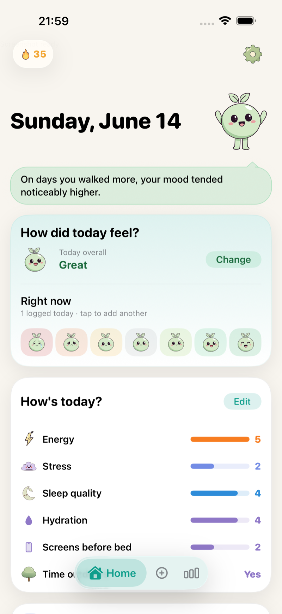
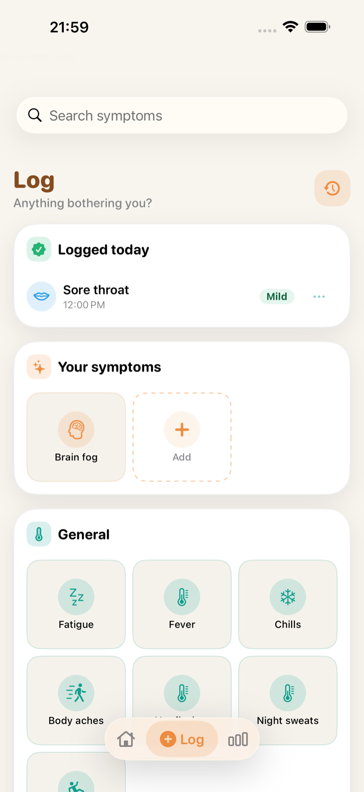
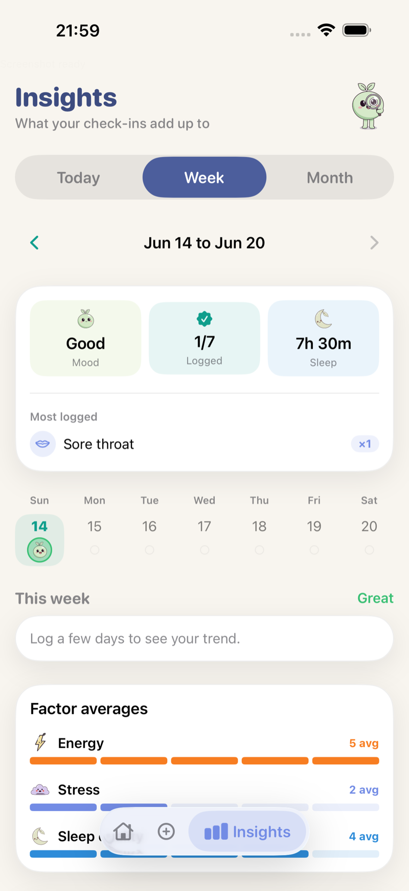
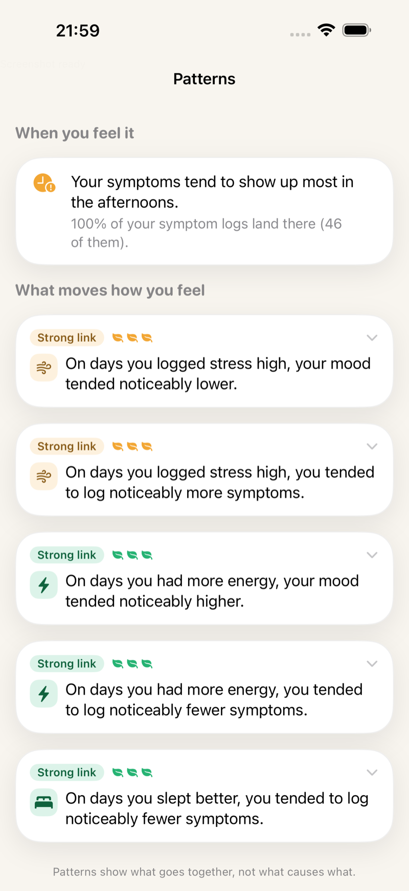
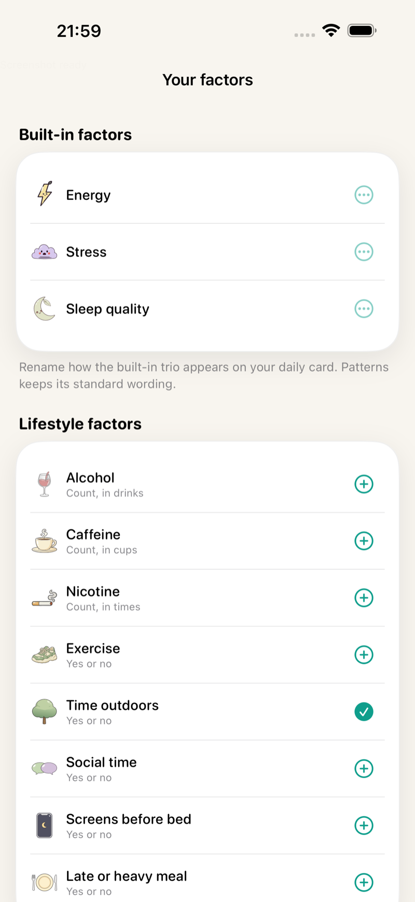
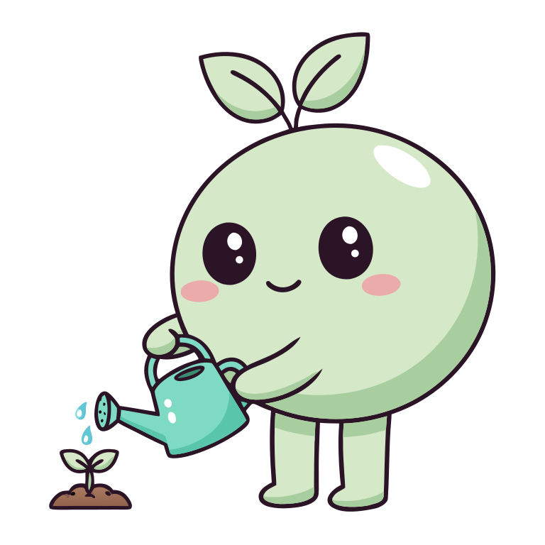
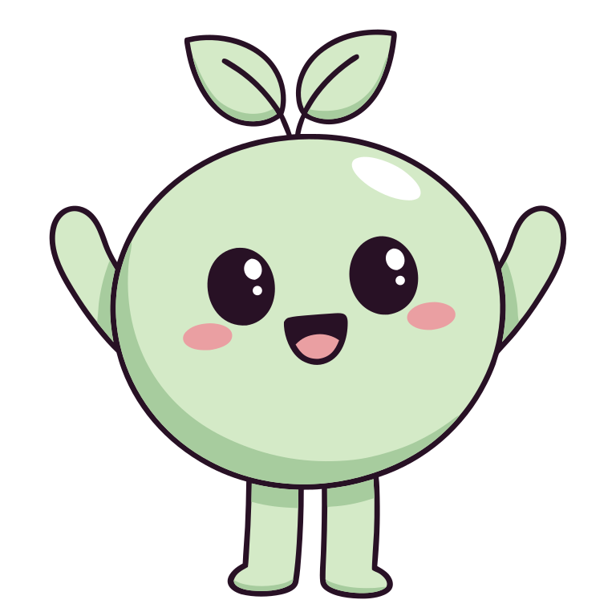

A warm mood and symptom diary that takes seconds a day. Tend finds the patterns behind how you feel, and writes every entry to Apple Health, where your data belongs.

A check-in takes seconds. Everything else is here when you want it.

HomeYour daily check-in, streak, and what moved your mood.

LogDozens of symptoms, severity in a tap, saved to Apple Health.

InsightsYour week and month, summed up from your check-ins.

PatternsPlain sentences about what moves with what. Never causes.

FactorsEnergy, stress, sleep, and the lifestyle factors you choose.
Most trackers keep your data hostage. Tend logs fast, finds what moves you, and hands everything to Apple Health.
A gentle daily check-in saved as State of Mind in Apple Health. Two taps on a good day, room for notes on a hard one.
39 Apple Health symptom types plus custom ones of your own. Severity in one tap, written back to Health as real samples.
Rate energy, stress, and sleep quality, or define your own. They feed straight into your patterns.
On-device correlations between your moods, symptoms, factors, sleep, steps, mindfulness, and cycle. Plain sentences, not charts to decode.
Sprout, your garden companion, grows with your check-ins. Miss a day and nothing resets: life happens, and Tend knows it.
A one-tap month summary you can share or print: mood line, top symptoms, factor effects. Bring data, not guesswork.
See your Apple Health medication log next to how you feel, and let patterns connect the two.
Apple Intelligence sums up your week in one honest line, generated on your iPhone. Nothing ever leaves it.
VoiceOver labels everywhere, full Dynamic Type, Reduce Motion respected, and charts that describe themselves out loud.
Tend is the rare tracker that writes back. Moods become State of Mind samples, symptoms become Health samples, all stored in Apple Health under your control. Delete Tend tomorrow and your history is still yours, in the Health app, forever.
Your factors, notes, and custom symptoms sync privately through your own iCloud, so a new iPhone picks up right where you left off.

One check-in, everywhere you already are. All included, no extra purchase.
Check in from your wrist with a crown-first flow, plus complications for your streak and today's mood.
A face picker that opens straight to how you feel, a one-tap logger, and a Duolingo-style streak flame.
A Log Mood control, one swipe away from anywhere on your iPhone.
A warm, native iOS 26 layout that scales cleanly to the bigger screen.
Localized from day one, from Norwegian and German to Arabic, Hindi, and Japanese.
Your notes and custom factors follow you between devices through your own iCloud, never our servers.
No account, no sign-in, no tracking, no ads. Patterns and AI summaries are computed on-device. Your health data is never sent to us or anyone else.
iPhone, iPad, and Apple Watch ship today. Here is what's already on the trellis.
Deeper menstrual-cycle patterns for the people Tend was built for.
Optional, kind nudges that build the habit without a hint of streak guilt.
Smarter, fully private recaps as Apple's on-device models grow.
Tell us what would help at support@ludyem.dev. A human reads every note.

Free to download. Logging free forever. No account, and your data stays yours.
Download Free on the App StoreiOS 26+ · iPhone, iPad & Apple Watch · Writes to Apple Health